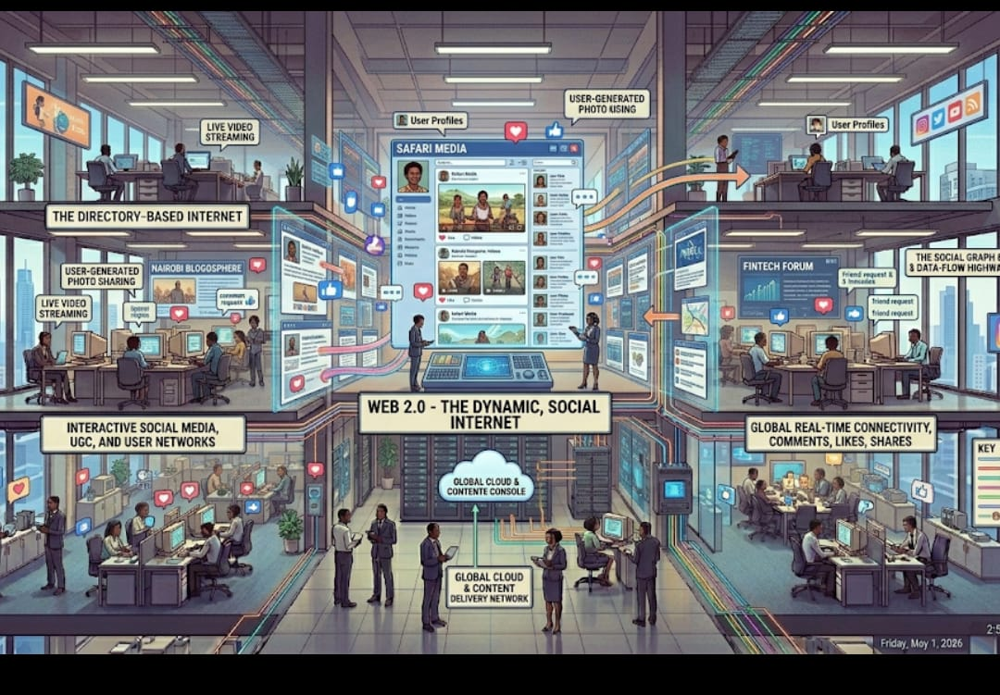

Definition
Web 2.0 is the second generation of the web that introduced interactivity, user-generated content, and social networking. It transformed the web from a read-only platform into a dynamic and collaborative environment.
Users are now able to create, share, and interact with content on various online platforms.
Explanation
Web 2.0 allows users to actively participate through blogs, social media, forums, and video-sharing platforms.
Technologies such as JavaScript and AJAX enable dynamic updates without reloading pages, improving user experience. This shift has made the web more engaging and interactive compared to earlier versions.